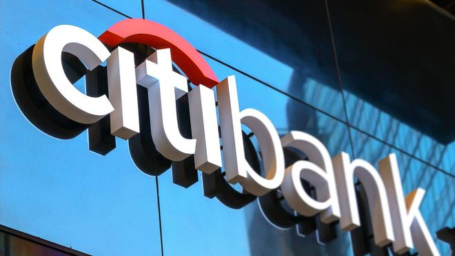

Noticias
Mineros de Bitcoin vendieron todas las monedas conseguidas en mayo

A los mineros de Bitcoin les resulta muy difícil continuar con su actividad, pues el coste de producción ha superado las ganancias. El mercado de criptomonedas entró en una fase bajista hace varios días. Se evidencia una tendencia de todo el mercado con la mayoría de las criptomonedas cayendo a un mínimo de 4 años. El deterioro de las condiciones del mercado también ha afectado negativamente a la rentabilidad de la minería de Bitcoin (BTC). Consecuentemente se ha ido obligando a los mineros a liquidar sus tenencias. Nuevos datos de Arcane research muestran que las empresas públicas que se dedican a la minería de Bitcoin vendieron el 100% de su producción de BTC en mayo. Desafortunadamente, el habitual era entre un 20-40%. En los primeros cuatro meses de 2022, las empresas mineras públicas de BTC vendieron el 30% de su producción minada, que se multiplicó por 3 en mayo y se espera que aumente aún más en junio. Las mineras públicas de BTC sólo representan el 20% del hashrate total de la red. Su comportamiento suele reflejar también el sentir de los mineros privados. Los mineros poseen colectivamente 800,000 BTC, lo que los convierte en una de las mayores ballenas del mercado. De ellos, las mineras públicas poseen 46.000 BTC y su ola de ventas podría empujar el precio aún más a la baja. Bitcoin cayendo bajo máximos de 2017 La condición no ha hecho más que empeorar en junio, con el precio de Bitcoin cayendo por debajo del máximo de 2017 de USD 20,000 y registrando un nuevo mínimo de 4 años de USD 17,783. Los depósitos de los mineros a los exchanges, una métrica de datos que muestra el volumen de BTC enviado por los mineros a los exchanges de criptomonedas, ha alcanzado un nuevo máximo en junio. Esta información ha llegado a un nivel que no se veía desde enero de 2021. La relación entre mineros de BTC y los depósitos a los exchanges ha alcanzado un nuevo máximo de 7 meses. La caída del precio del BTC también ha hecho que muchas máquinas de minería no sean rentables. Este acontecimiento obligó a los mineros a abandonar el mercado de las criptomonedas
Citibank se asocia con empresa suiza de criptomonedas
Citibank anuncia que seleccionó a METACO, empresa suiza de criptomonedas, para desarrollar servicios de custodia de activos digitales. Citi ofrece custodia de Bitcoin a sus clientes Citi es un banco líder global que ofrece productos y servicios financieros a nivel mundial y opera en más de 160 países, con activos bajo administración de más de $27 billones, más de 200,000 empleados y ventas anuales de más de $70 mil millones. Este miércoles anunció que se asoció con el proveedor líder de tecnología para instituciones financieras en el ecosistema de activos digitales METACO. Esta asociación relaciona una amplia red de custodia de Citi con la tecnología y las soluciones digitales de METACO. Lo anterior dará como resultado el desarrollo e implementación de servicios y custodia para Bitcoin y otros activos digitales. Además, Citi aprovechará su extensa red global junto con el poder de la plataforma Harmonize, para expandirse de manera segura y efectiva a nuevos mercados a nivel mundial.